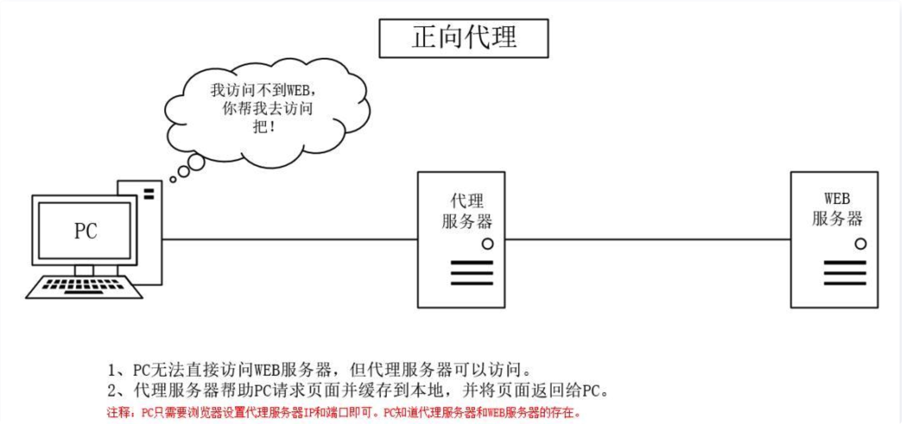
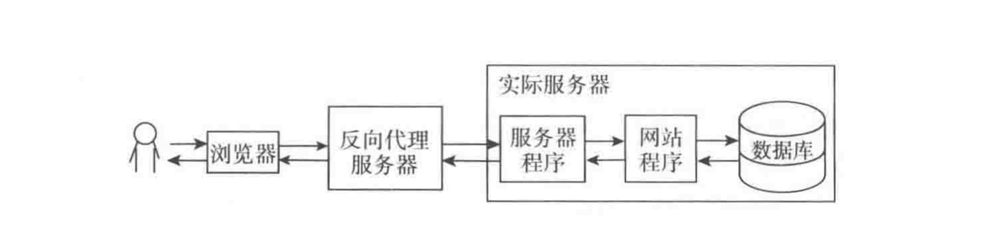

正向代理服务器
正向代理是一个位于客户端和目标服务器之间的服务器(代理服务器)，为了从目标服务器取得内容，客户端向代理服务器发送一个请求并指定目标，然后代理服务器向目标服务器转交请求并将获得的内容返回给客户端。
正向代理fuwuqi
反向代理服务器
反向代理是指以代理服务器来接受internet上的连接请求，然后将请求转发给内部网络上的服务器，并将从服务器上得到的结果返回给internet上请求连接的客户端，此时代理服务器对外就表现为一个反向代理服务器。
反向代理
反向代理服务器与正向代理服务器的区别
正向代理："代理服务器"代理了"客户端"，去和"目标服务器"进行交互。
反向代理："反向代理服务器"代理了"真实的服务提供者",去和"客户端"进行交互
- 正向代理其实是客户端的代理，帮助客户端访问其无法访问的服务器资源。反向代理则是服务器的代理，帮助服务器做负载均衡，安全防护等。
- 正向代理一般是客户端架设的，比如在自己的机器上安装一个代理软件。而反向代理一般是服务器架设的，比如在自己的机器集群中部署一个反向代理服务器。
- 正向代理中，服务器不知道真正的客户端到底是谁，以为访问自己的就是真实的客户端。而在反向代理中，客户端不知道真正的服务器是谁，以为自己访问的就是真实的服务器。
- 正向代理和反向代理的作用和目的不同。正向代理主要是用来解决访问限制问题。而反向代理则是提供负载均衡、安全防护等作用。二者均能提高访问速度。
正向代理用途
反向代理用途
-
隐藏服务器真实IP
使用反向代理，可以对客户端隐藏服务器的IP地址。
-
负载均衡
反向代理服务器可以做负载均衡，根据所有真实服务器的负载情况，将客户端请求分发到不同的真实服务器上。
-
提高访问速度
反向代理服务器可以对于静态内容及短时间内有大量访问请求的动态内容提供缓存服务，提高访问速度。
-
提供安全保障
反向代理服务器可以作为应用层防火墙，为网站提供对基于Web的攻击行为（例如DoS/DDoS）的防护，更容易排查恶意软件等。还可以为后端服务器统一提供加密和SSL加速（如SSL终端代理），提供HTTP访问认证等。